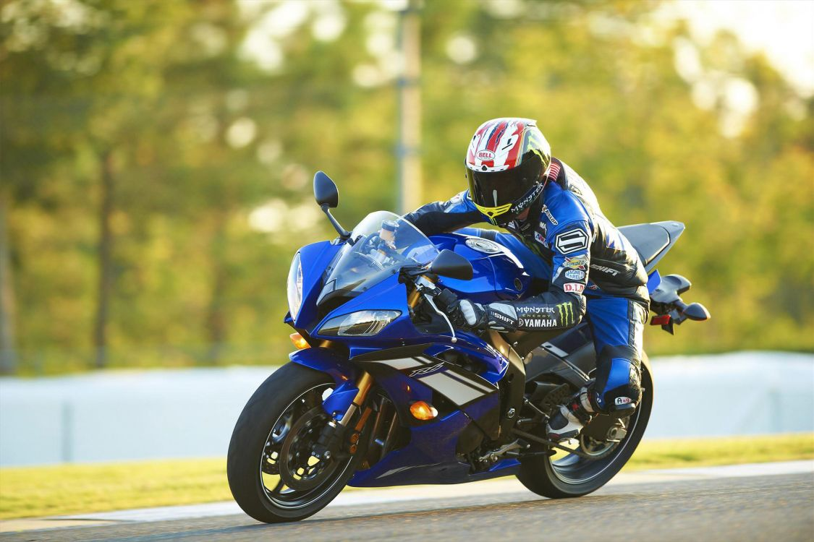
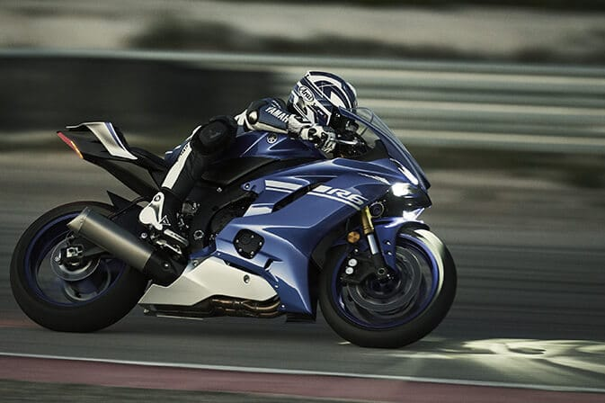
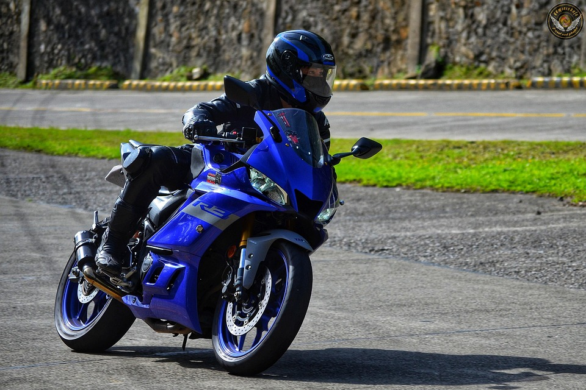
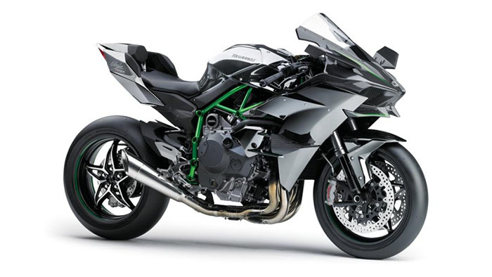
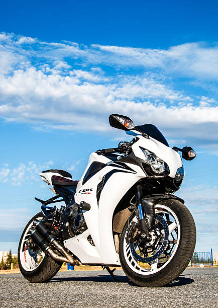

Bienvenida a la aventura
Cundinamarca ofrece paisajes increíbles, carreteras llenas de curvas y pueblos con una riqueza cultural única para recorrer sobre dos ruedas.
Galería de Rodadas (5 imágenes requeridas)




